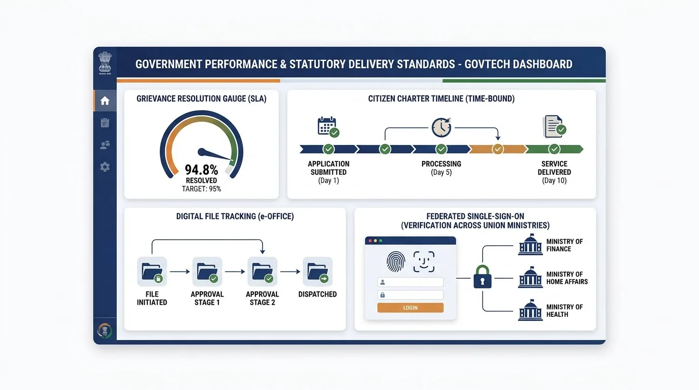

97.4% SLA
MeitY
Electronics & Information Technology
182 Services
Open
Comprehensive directory and civic performance monitor for all Union Ministries, Executive Departments, and Apex Commissions serving 1.4 billion citizens across the Republic of India.
High-volume central civic gateways powering national public digital infrastructure

Monitoring governance efficiency, grievance redressal turnaround, and faceless service delivery across all 54 Union Ministries under the Government of India Accountability Framework.
Average resolution in 14 days with direct citizen satisfaction audit.
Adopted across 54 ministries with zero physical paper file movement.
API-enabled digital public services linked to MeriPehchaan & DigiLocker.
Time-bound citizen charter guarantee with penalty-backed entitlements.
Citizens can instantly authenticate with Aadhaar / PAN to auto-fetch credentials, file grievances through CPGRAMS, and track departmental service applications without multiple registrations.